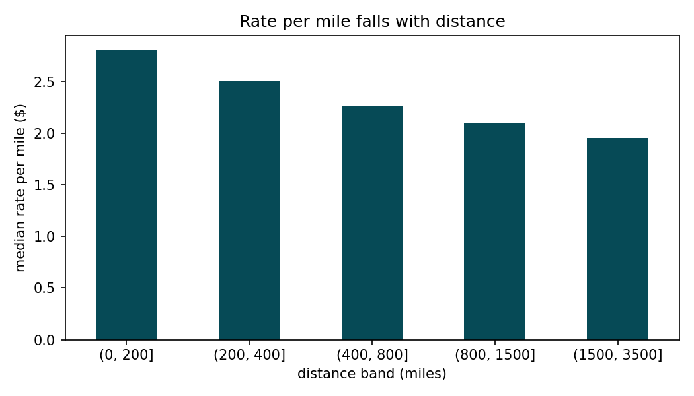
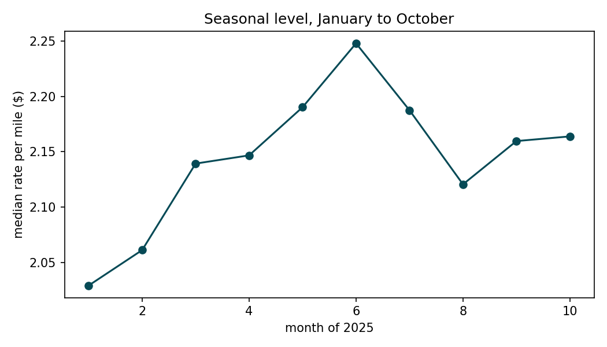
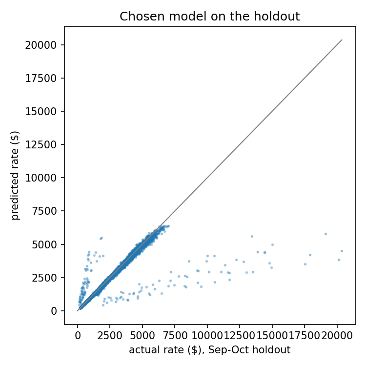
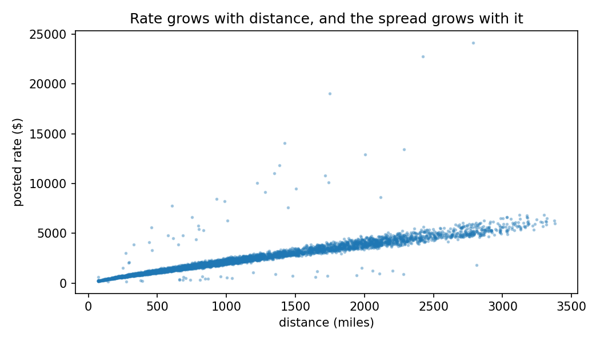
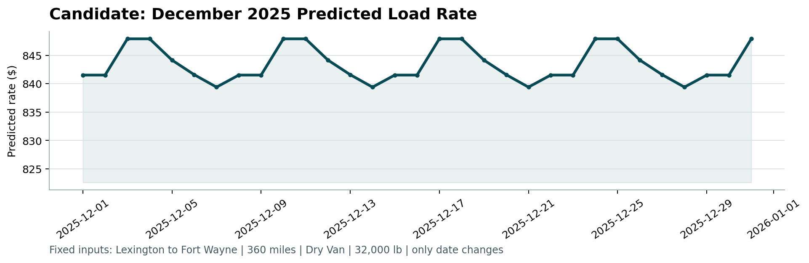
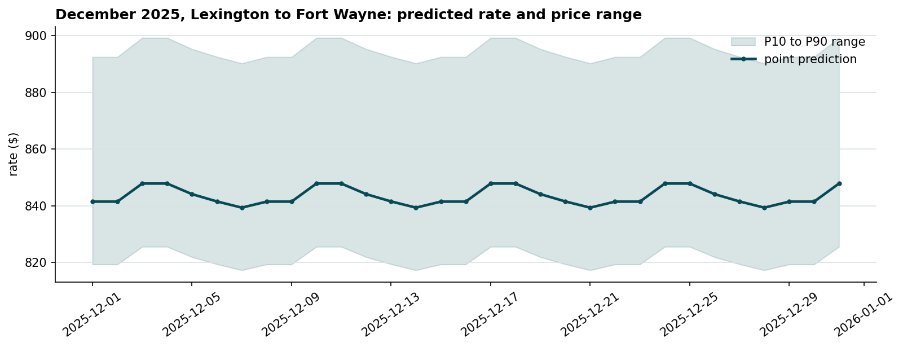

The labeled loads run from 1 January to 31 October 2025 (48,000 rows). The loads to predict run from 1 November to 31 December (12,000 rows). Because the task is to predict the future, the holdout has to sit after the training slice in time. The model was fit on January to August (38,477 loads) and measured on September and October (9,523 loads). A random split would let the model see market conditions from the months it is later asked to forecast, and the score would look better than the one Spotter will measure.
Everything learned from data is computed on the training slice and reused: the fill value for missing weight, the equipment codes, the rate per mile of the baseline. After the choice of model and features, the chosen model was refit on all 48,000 labeled loads and then applied to the validation loads and to the December lane. The same cleaning and feature code runs on all three files.
| Found | Decision |
|---|---|
| 292 training loads and 145 validation loads with a negative weight | Sign flipped. Their magnitude (median 31.7k lb) and their rate per mile ($2.16) match the positive loads, so this is a sign error at entry rather than a different kind of load. |
| 300 training loads and 165 validation loads with no weight | Filled with the training median. The median is within 150 lb across the three equipment types, so one value is enough. |
374 gaps in market_index | The column left the model (section 4), so no fill was needed. |
| 8 validation cities that never appear in training (1,447 loads, 12%) | Location enters as coordinates instead of city names, so a new city is placed by where it is. |
The December lane inputs have no market_index, quote_signal or coordinates | Coordinates are one fixed pair per city and come from a lookup table. The other two columns are not used by the model. |
Distance explains most of the rate (correlation 0.91), and the rate per mile falls with distance: a median of $2.80 per mile under 200 miles against $1.95 above 1,500. Equipment shifts the rate per mile (Reefer $2.31, Flatbed $2.22, Dry Van $2.05). The level moves with the season, from $2.03 per mile in January to $2.25 in June and back to $2.16 in October. Day of week moves it very little ($2.19 to $2.25). quote_signal varies from load to load on the same day and has a correlation of 0.05 with the rate per mile, so it behaves like noise.


| Model | MAE | MAPE |
|---|---|---|
| Baseline: median rate per mile of the training slice times distance | $257 | 11.6% |
| Ridge regression on log rate, with distance, log distance and equipment | $134 | 6.0% |
| Gradient boosting (scikit-learn HistGradientBoosting), raw target | $138 | 6.4% |
| Gradient boosting, log target: chosen | $122 | 5.4% |
Chosen model plus market_index and quote_signal | $126 | 5.4% |
| Chosen model plus city names as categories | $132 | 5.8% |
| Chosen model without coordinates | $130 | 5.9% |
The chosen model uses equipment, pickup and delivery coordinates, distance, weight, month and day of week, and predicts the log of the rate. The log target turns a dollar error into a percentage error, so a $25,000 load no longer dominates training, and it cut the MAE from $138 to $122 with the same features. The two columns absent from the December inputs did not improve the holdout, so one model serves both deliverables. MAE is reported because a dispatcher reads it directly (the model misses by $122 per load); MAPE because the rates run from $57 to $25,533 and a percentage treats cheap and expensive loads alike.
Where the model misses: the error grows with the rate. MAE is $22 under 200 miles and $230 above 1,500 miles, while MAPE stays between 5.4% and 6.0% across bands.


Lexington to Fort Wayne, 360 miles, Dry Van, 32,000 lb, one prediction per day. Only the date changes between rows, and the date reaches the model as month and day of week. December is outside the training period, so the model carries the level of the last months it saw, and the line moves only with the weekly pattern, between $839 and $848. The 32 training loads on this lane averaged $857. The chart below is the one produced by the supplied score.py.

A dispatcher works with a range, not a point. The range is the point prediction times two factors: the 10th and 90th percentile of actual divided by predicted, measured on the holdout, which the model had not trained on. To check it honestly, the factors were first computed on September alone and applied to October: the range covered 84.7% of the October loads, close to the 80% it aims for. The final factors, from the whole holdout, are 0.974 and 1.061, so the range is about 9% of the rate wide. The files reports/validation_predictions_with_range.csv and reports/december_lane_with_range.csv carry the P10 and P90 next to each prediction.

Six tests in tests/test_prepare.py pin the cleaning and feature code: the negative weight is flipped, the missing weight receives the given fill value, month and day of week come out of the date, a city without coordinates receives them from the lookup, the model input has the feature columns in order, and the price range sits around the point.
The three files are already the shape of a production job. Training would run on a schedule, the model would be promoted only if the holdout error stayed inside the band seen at launch, and a weekly monitor would compare predicted against realized rate per mile by distance band and equipment, stopping publication when the drift crossed a limit. A new model would take a share of the loads first and the rest only after its realized error matched the old one. This is how the lead-scoring system I run at Bring Data is operated: a quality gate before the registry, daily checks that stop the send, and a canary rollout.